Our philosophy
Connecting people and content
to create new possibilities.
Shibuya, Tokyo · --:--:--
Founded in 2022
新規プロジェクト受付中
人とコンテンツで、
まだ見ぬ可能性をつなぐ。
Latest work →
Start a project
We are using interactive technology to transform the traditional entertainment culture—where the stage and the audience, as well as artists and fans, were once separated—into a new culture of INTERTAINMENT.
Inter = 交流する 「エンターテインメント(Entertainment)」の「Enter」は、ラテン語で「引き込む」という意味の単語に由来しています。私たちは相互的(Inter)なテクノロジーを活用し、かつては舞台と観客、アーティストとファンが隔てられていた従来のエンターテインメント文化を、新たな文化であるINTERTAINMENTへと変革しています。
Branding
Integrated branding services for the INTERTAINMENT sector, seamlessly bridging the physical and digital worlds.
フィジカルとデジタルを繋ぎ、一気通貫したインターテインメント領域のブランディング事業
Creative
Production
Design, Web, and Video production powered by cutting-edge technologies, including WebGL, 3D CG, and AI.
WebGL / 3D CG / AI などの技術力を駆使した、Design・Web・Videoプロダクション事業
Original
Product
Digital product development aimed at accelerating the future of INTERTAINMENT.
インターテインメントを加速させる、デジタルプロダクト開発事業
Creative Studio

SIDE DOCKCONNECTING
PEOPLE and CONTENT.
PORT / Harbor, Connection Point — Japan, 1853. Following the opening of the ports of Shimoda and Hakodate, a diverse flow of cultures, information and people began to circulate, leading to the evolution of various cultural aspects—not only in terms of food, clothing and shelter, but also in entertainment and the arts. Throughout history, new cultures and stories have always emerged from exchanges that transcend borders and boundaries. People and content. The everyday and the extraordinary. The digital and the physical. We at PORTS aim to create a space where the next generation of entertainment culture can flourish, made possible precisely because everything is now seamlessly connected through modern technology.
PORT / 港、接続口 1853年、日本。下田と箱館の開港以降、様々な文化・情報・人々が行き交い、衣食住だけではなく娯楽や芸術など様々な文化が進化を遂げていった。いつの時代も国境や領域を超えた交流から、新たな文化や物語は始まっている。人々とコンテンツと。日常と非日常と。デジタルとフィジカルと。我々PORTSは現代のテクノロジーを通じて、あらゆるものがシームレスに繋がる今だからこそできる、次世代のインターテインメント文化が生まれる場所を目指します。
Creative vision that imagines what no one has seen and technical prowess that makes it real, held by one and the same team — that is how we deliver seamless, groundbreaking entertainment experiences that transcend boundaries and reach audiences worldwide.
誰も見たことのない景色を思い描く創造力と、それを現実に変える確かな技術力。その両方を一つのチームに宿して、境界線を超えたシームレスなインターテインメント体験を世界中に提供する。